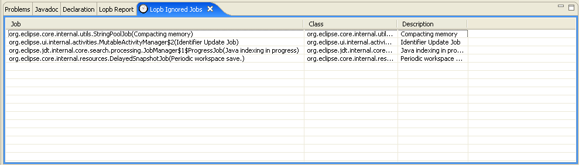

Users may indicate that they want Lopb to ignore certain jobs (see Lopb Report View: Right-click Menu, command Ignore Job). The jobs that have been ignored are displayed in the Ignored Jobs View shown below.
